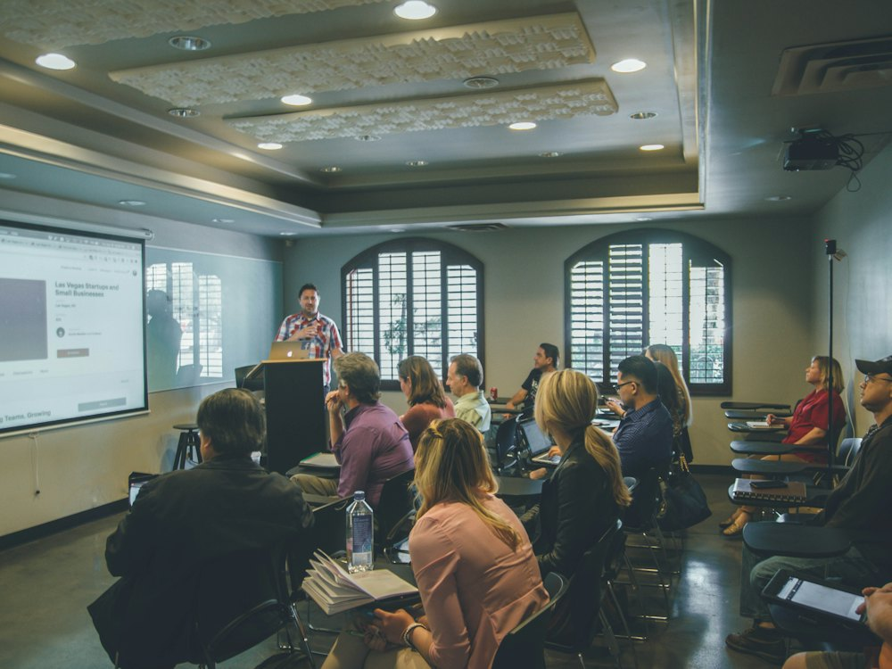
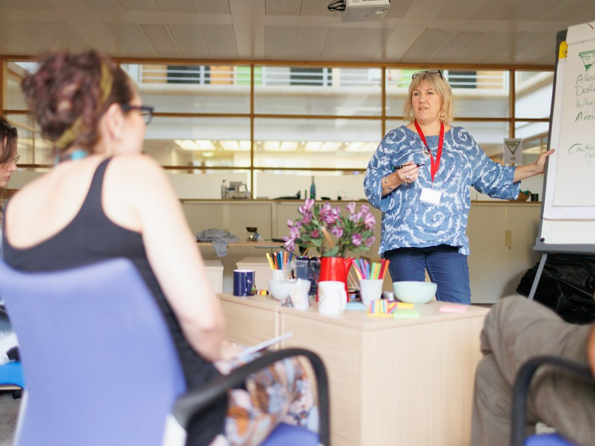
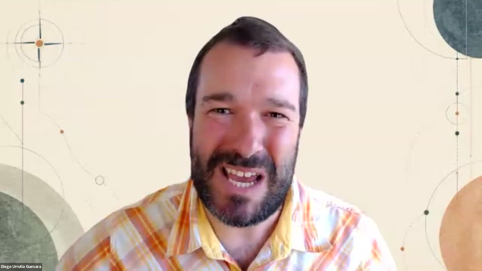
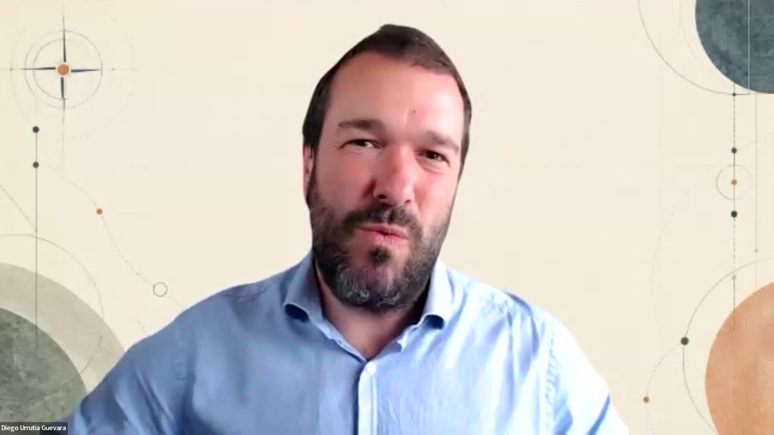
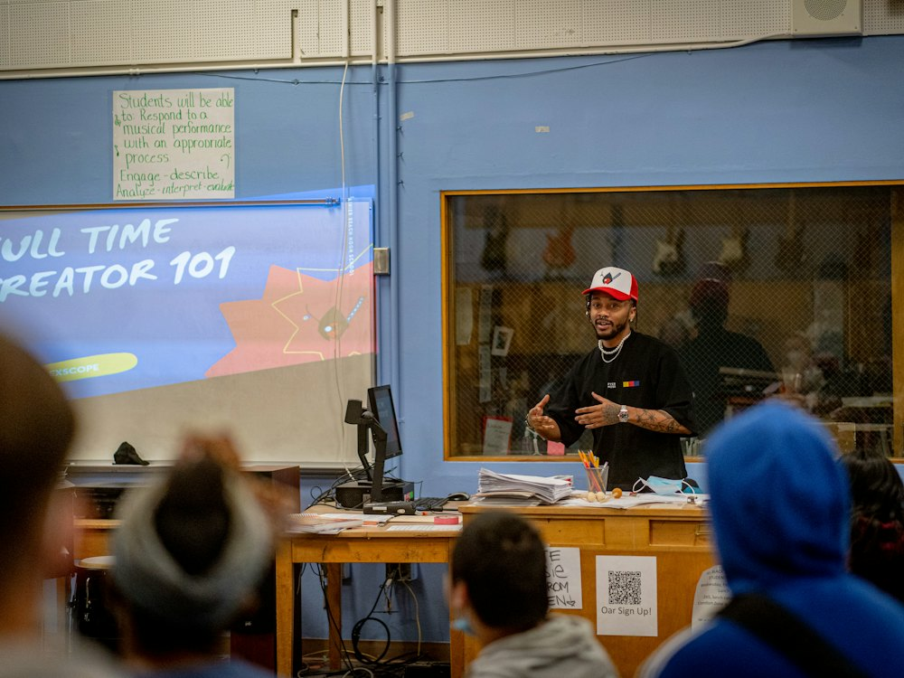
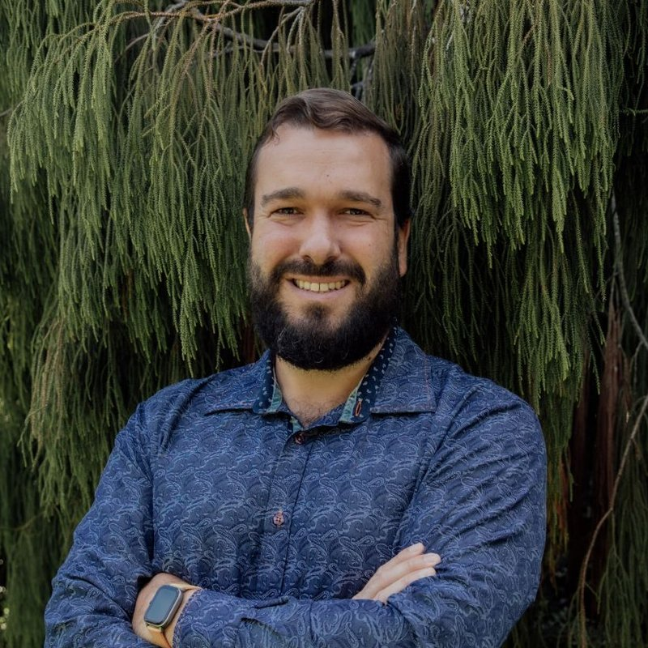

01
Escuelas y equipos directivos
Directores, jefes de estudios y equipos docentes que quieren devolver tiempo al profesorado y mantener fuerte la parte humana de enseñar.
MoreHuman Ed ayuda a escuelas, organizaciones de formación y educadores a convertir el trabajo repetitivo y los experimentos tecnológicos dispersos en sistemas prácticos y seguros, para que docentes y formadores puedan escuchar, observar y acompañar a cada persona que aprende.
Por Diego Guevara, educador científico y diseñador de sistemas de aprendizaje.
Una introducción de seis minutos de Diego: para quién es, por qué importa ahorrar tiempo y qué vas a encontrar aquí. El vídeo está en inglés.
Se reproduce desde YouTube solo cuando pulsas el botón.
Directores, jefes de estudios y equipos docentes que quieren devolver tiempo al profesorado y mantener fuerte la parte humana de enseñar.
Entidades de formación, institutos profesionales y equipos de aprendizaje corporativo que quieren sistemas prácticos que ahorren tiempo a los formadores sin bajar la calidad.
Formadores independientes, facilitadores y profesores que quieren flujos de trabajo más claros, mejores hábitos de retroalimentación y más tiempo para atender a las personas de la sala.

En cada sala hay alguien que necesita ser visto.
Photo: Quilia / UnsplashEn cada aula y en cada sala de formación hay personas que aprenden de maneras distintas. Atender a cada una es difícil cuando docentes y formadores están cansados y el día está lleno de tareas rutinarias.
La solución no es pedirles más. Es quitar lo que no necesita a una persona, para que lo que sí la necesita tenga espacio.
Todos reciben lo mismo. Las diferencias pasan desapercibidas.
Cada persona que aprende es vista y acompañada de la manera que le conviene.
Identificar las tareas repetitivas que le quitan atención al aula y convertirlas en flujos de trabajo simples y repetibles.
La tecnología propone. Docentes y formadores revisan, deciden y hablan con quienes aprenden y con sus familias. Nada sale de la organización sin una persona.
El tiempo y el espacio mental son el verdadero recurso. El objetivo es devolverlos para poder observar, escuchar y responder.
Pequeños, prácticos y reversibles. El precio se comparte a consulta, para ajustarlo al tamaño de la escuela u organización.
Una conversación breve sobre su equipo, sus prioridades y dónde se escapa el tiempo.
Escogemos uno o dos cambios prácticos que encajen, en lugar de intentar cambiarlo todo.
Docentes y formadores los prueban en su trabajo real, con ayuda cerca.
Se revisan con honestidad la confianza, el uso y el tiempo estimado ahorrado, incluyendo lo que costó.

La tecnología propone. Las personas deciden.
Photo: Centre for Ageing Better / UnsplashUna biblioteca en crecimiento sobre sistemas sencillos que devuelven tiempo y atención a docentes y formadores.

NuevoTres formas prácticas en que docentes y formadores pueden ahorrar tiempo: retroalimentación personal a partir de notas de corrección, una agenda semanal visual y una lista de verificación reutilizable creada desde una presentación del curso. El vídeo está en inglés.

VídeoTres ejemplos prácticos para docentes y formadores: un correo cálido y profesional, una explicación diferenciada para tres estudiantes y una guía de estudio con cuestionario y autoevaluación. El vídeo está en inglés.
Comunicar con claridad sin sumar carga de trabajo.
Discovery Lab es un proyecto interactivo de aprendizaje de las ciencias basado en la exploración, la evidencia y la simulación práctica. Muestra el tipo de experiencia de aprendizaje centrada en las personas que MoreHuman Ed ayuda a diseñar.
Explorar Discovery LabCuando escuelas y organizaciones completen sus pilotos, los resultados aparecerán aquí. Nada se muestra sin su aprobación, y no se prometen cifras por adelantado.

El tiempo para escuchar es el verdadero recurso.
Photo: LexScope / Unsplash
Diego Guevara es educador científico, formador de docentes y diseñador de sistemas de aprendizaje. Ayuda a escuelas y organizaciones de formación a usar tecnología práctica para reducir el trabajo rutinario sin perder el corazón humano de la enseñanza y el aprendizaje.
A través de MoreHuman Ed, Diego explora cómo la tecnología puede fortalecer el criterio, la conexión y el cuidado humanos.
Una conversación relajada de 20 minutos. Sin compromiso.